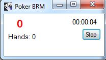

Arranque
Dezipar a pasta stoploss onde quiserem. Para cada atualização futuras, basta dezipar a pasta em cima da antiga pasta e assim não vão perder as configurações anteriores.
Clicar em Stoploss.exe para lançar a aplicação:

Se ao lançamento tem uma mensagem de erro, tem de descarregar o "net framework 4.0" da microsoft.
Configuração da DB
Nos campos server, port, userdb, password, vocês tem de preencher os valores necessarios para que a aplicação consegue se ligar a vossa DB postgresql. Os valores aqui inseridos correspondem aos valores por defeitos:
Servidor: 127.0.0.1
Porta: 5432
Base de dados: clicar no tracker opção database
Utilizador BD: postgres
Palavra passe: postgrespass or dbpass
O campo databse corresponde ao nome da vossa base de dados do vosso tracker.

Depois de ter preenchido todos os campos, clicar em test e se tiver tudo bem vão obter essa mensagem e a applicação vai se fechar.

Em caso contrario verificar os dados inseridos, mas em particular o nome da base de dados.
Abrir de novo a aplicação, e agora vão poder inserir o vosso nickname da room onde jogam ou o alias criado no hem ou pt4 (se tiver tudo bem vão ter isso).

Conf. Stop
No separador conf. stop vão poder configurar o stops. Podem os confiugrar todos ou nenhum.

Stoploss:
Intermédio: A parti de xx BBs um som toca durante 5 segundos.Final: A partir de xx BBs negativos o som toca.
StoplossPeak:
Aqui é mais dificil a explicar, vamos ver se o povo entende. Começamos uma sessão onde já estamos positivos de 200bs. Vamos agora supor que inseri 160 no campo over, neste caso o stoplosspeak comece já entra em jogo por ter ultrapassados os 160. Vamos agora supor, que perdemos 180 dos 200, e que inseri 150 no stoplosspeak. Neste caso perdi mais daquilo que inseri, os 150, logo o som começa a tocar.StopHands:
A partir de xx hands o som toca.StopTime:
A partir de xx minutos o som toca.(inserir em minutos).StopWin:
Intermédio: A parti de xx BBs um som toca durante 5 segundos.Final: A partir de xx BBs positivos o som toca.
Resume on Stop:
Se metemos o visto, ao fim da sessão, depois de clicar em stop vamos ser redireccionados para o separador resume session onde vai estar o resume da sessão que jogamos.Hide BBs:
Permite de esconder os bbs da janela que aparece depois de clicar em start.Close Skype:
Se ativo, fecha o skype.Active button set:
Permite de ativar o botão "set" que permite reajustar os valores de stop durante a sessão.Block Limit above:
Permite bloquear os limites nos quais não deveriamos jogar segundo a nossa gestão de banca.Escolher o limite maximo.
Room: pokerstars.
Por enquanto só funcionas com a pokerstars NoLimit porque só jogo nessa room e esse tipo de limite.
Para mais room e limites enviem me 3 ou 4 maõs onde podem mudar os nomes dos jogadores.
Sounds:
Permite de definir os sons (só *.wav e *.mp3).Resume Session
Faz um resumo da sessão que acabaram de realizar e dos melhores resultados positivos ou negativos desde que tenham o stoploss.
Start
Start para começar.Se gostem não se esqueçam de um pequeno donativo.
Feedback para enviar um critica ou sugestão.

Durante a sessão
